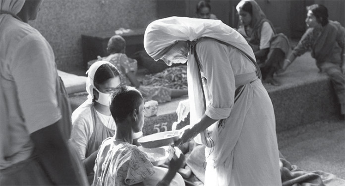

Mirëkuptimi, solidariteti, empatia dhe respekti ndaj të tjerëve
Me mendje dhe zemër për njerëzit
Situata 2.
Nënë Tereza u dha njerëzve dashurinë e mbështetjen më të madhe. Sa humane! Shpesh, në orën e lëndës Shoqëria dhe mjedisi ne shprehim vlerësim për çdo kontribut në të mirë të njerëzve. Secili nga ne bën aq sa mundet. Fëmijët ndihmojnë të moshuarit që kanë pranë. Mjekët ndihmojnë pacientët dhe këdo që ka nevojë për ta. Mësuesit përkujdesen që fëmijët të marrin sa më shumë dije. Ata ndihmojnë edhe fëmijët që kanë vështirësi. Po ashtu, shokët ndihmojnë njëri-tjetrin në situata të vështira.
